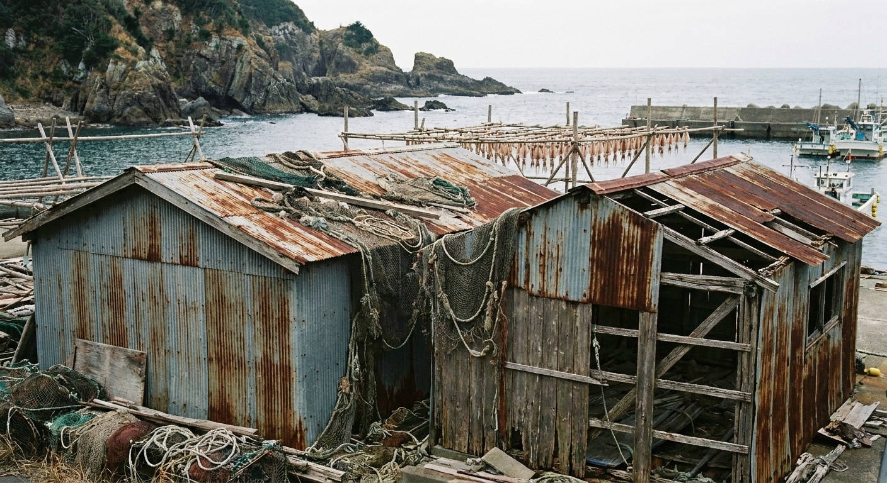
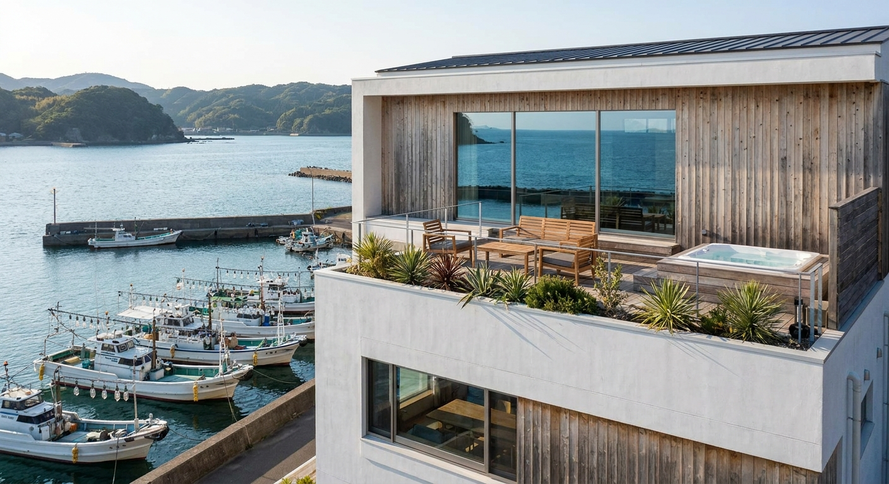
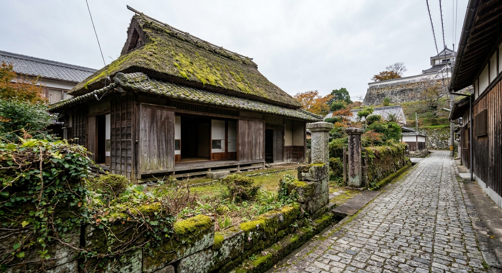
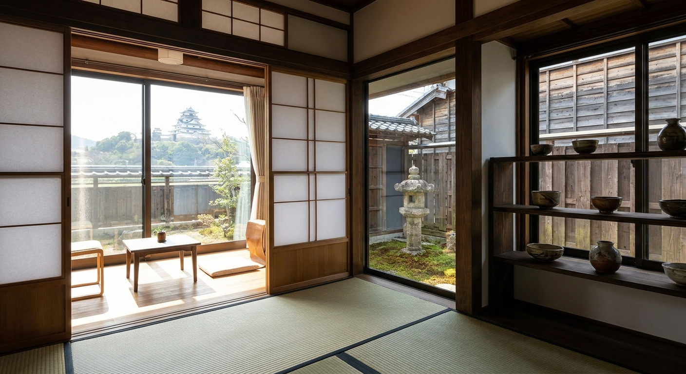
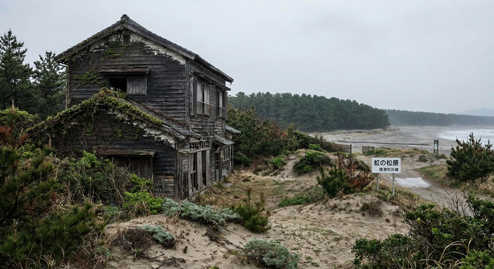
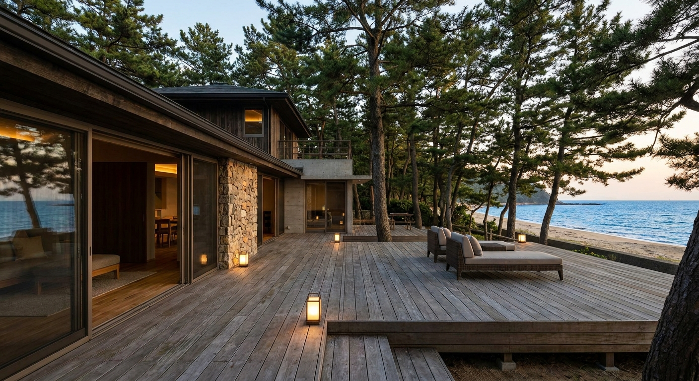
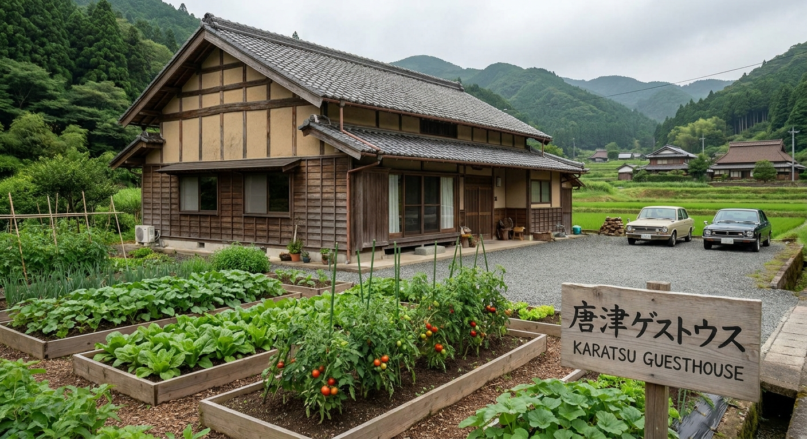

実際の物件 · 唐津古民家
AI リノベーション後Score Overview · 全物件スコア
立地・単価ポテンシャル・初期投資効率・稼働率・差別化要素の5項目を各20点満点で評価。

現状写真
AI リノベ後イメージ
現状写真
AI リノベ後イメージ
AI リノベ後イメージ — SATOYAMA FARMSTAYComparison · 全物件比較
| 物件 | スコア | 取得価格 | 総投資 | 年間純利益 | 回収期間 |
|---|---|---|---|---|---|
| 玄界灘 海沿い漁師小屋 呼子エリア · 海一望 |
86 | ¥500万 | ¥1,290〜1,740万 | ¥405万 | 4〜5年 |
| 唐津城下 築100年超 古民家 城内エリア · くんち至近 |
78 | ¥300万 | ¥895〜1,140万 | ¥198万 | 8〜10年 |
| 虹の松原 望む海辺ヴィラ 浜崎エリア · 松原隣接 |
74 | ¥800万 | ¥1,310〜1,565万 | ¥280万 | 9〜11年 |
| 唐津郊外 農家民宿転用 相知エリア · DIY向き |
65 | ¥100万 | ¥630〜910万 | ¥90万 | 10〜12年 |
※ Airbnb ホストサービス料15%（ホスト全負担型）・清掃費・修繕積立を控除後の純利益。収益は2名宿泊ベース。夏シーズン=92日（7〜9月）稼働80%、春秋シーズン=91日（4〜6月・10〜11月）稼働60%、冬シーズン=182日（12〜3月）稼働30%で計算。実際の収益は市場環境・運営体制により異なります。
Why Karatsu · 唐津を選ぶ理由
九州北西部に位置する唐津市は、豊かな自然・歴史・食文化と抜群のアクセスを持ちながら、空き家率が高く物件価格が依然として低水準。投資妙味が大きいエリアです。
Consultation · 無料相談
物件選定・リノベーション設計・Airbnb運用・SOLUNA SIPsパネル断熱施工まで一気通貫でサポートします。唐津市の空き家バンク活用・補助金申請も含めてご相談ください。
ありがとうございます。
24時間以内にご連絡します。